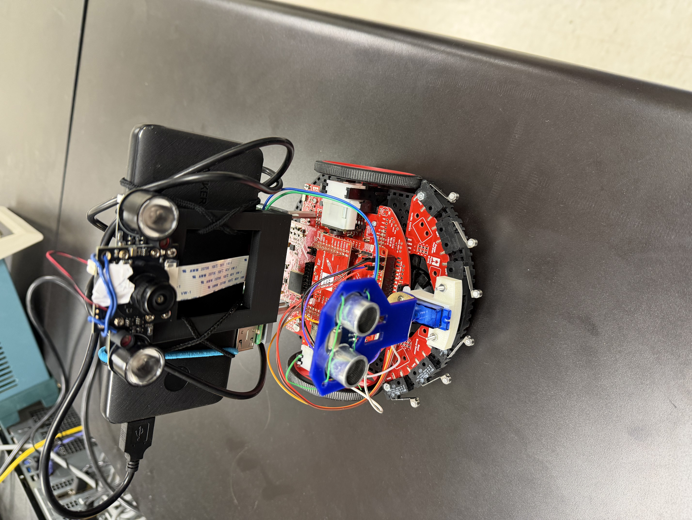
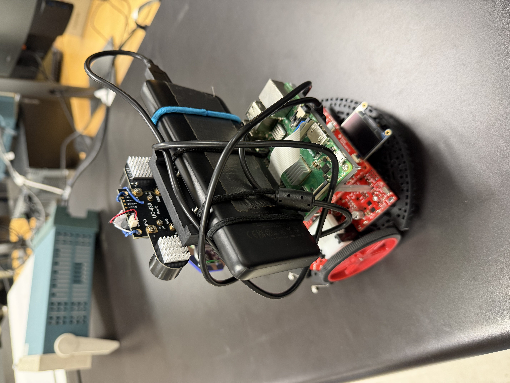
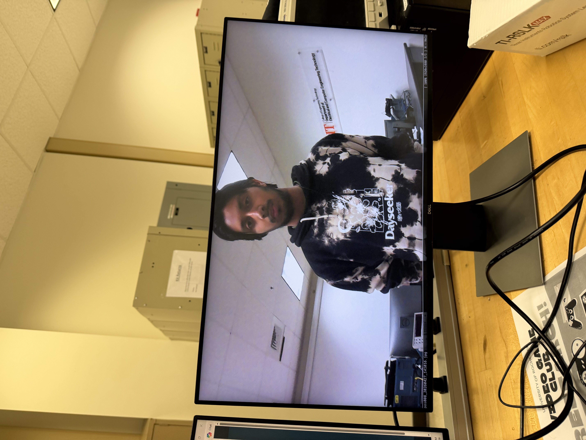

|
AIIRB is an autonomous mobile robot built on the TI MSP432P401R LaunchPad. It is designed to explore an unknown environment by continuously scanning ahead with an ultrasonic range‑finder mounted on a servo, selecting the direction with the most open space, and driving forward until it encounters an obstacle. When a bump sensor is triggered, the robot backs up and rescans. Simultaneously, a Raspberry Pi with an infrared camera is triggered at each decision point to capture thermal images. The images are saved for later analysis, making the platform suitable for thermal inspection, search & rescue simulations, or educational robotics projects. Key hardware components:
|
|
The project was inspired by the idea of a low‑cost, autonomous inspection robot that could navigate inside a building while capturing infrared images, useful for detecting heat leaks, overheating electrical panels, or locating people in low‑visibility conditions. The MSP432 would handle real‑time control (motor PWM, servo position, ultrasonic timing, and bump interrupts), while a Raspberry Pi would manage the IR camera and provide Wi‑Fi connectivity for live video streaming. The two boards communicate via simple GPIO handshake signals. The navigation strategy uses a state machine (SCAN → TURN → FORWARD → BUMP) that prefers straight movement unless a clear side path offers significantly more room, implementing hysteresis to prevent oscillation. |
Navigation State Machine
┌─────────┐ bump detected ┌──────┐
│ SCAN │◄────────────────────│ BUMP │
└─┬───┬───┘ └──┬───┘
│ │ all blocked │
│ └───────────────────────────►│
│ │
▼ │
┌──────┐ bump detected │
│ T90 │─────────────────────────► │
└──────┘ │
┌──────┐ │
│ T0 │─────────────────────────► │
└──────┘ │
┌──────┐ │
│ T180 │─────────────────────────► │
└──────┘ │
State Descriptions:
Software Modules
|
|
|
The robot was tested inside a makeshift “room” constructed from cardboard bricks. The enclosed space simulated walls and corners, allowing the ultrasonic sensor and bump switches to be evaluated in a controlled environment. Test Procedure:
Results: The robot consistently navigated the cardboard enclosure without escaping. Hysteresis prevented unnecessary turn oscillations. Bump detection worked reliably. Wi‑Fi streaming delivered a smooth 640×480 MJPEG feed with acceptable latency. |
Image Gallery   Demonstration VideoIR Emitter Test VideoBot Camera POV |
|